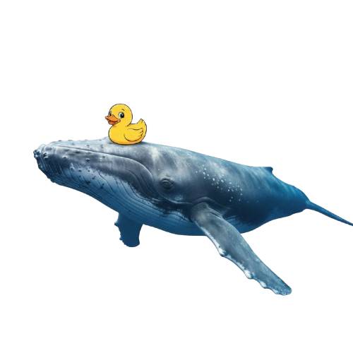
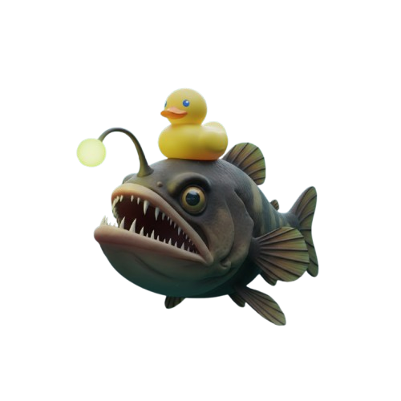

Os Gigantes Azuis do Planeta
Os oceanos são o coração pulsante da Terra, regulando o clima e sustentando uma vasta biodiversidade. Eles cobrem mais de 70% da superfície terrestre e contêm cerca de 97% de toda a água do planeta. Sua imensidão e profundidade ainda guardam inúmeros segredos a serem desvendados.
Principais Oceanos:
- Oceano Pacífico: O maior e mais profundo, abrigando a Fossa das Marianas.
- Oceano Atlântico: Separa a Europa e a África das Américas, com importantes rotas de navegação.
- Oceano Índico: O terceiro maior, conhecido por suas águas quentes e monções.
- Oceano Antártico (Austral): Circunda a Antártida, influenciando correntes globais.
- Oceano Ártico: O menor e mais raso, coberto por uma vasta camada de gelo.
Cada um possui características únicas que moldam a vida marinha e os padrões climáticos em todo o mundo.
A Vida Marinha: Diversidade e Adaptação

Baleias e Grandes Cetáceos
A Baleia-Azul é o maior animal do planeta, podendo atingir 30 metros. Elas são cruciais para a saúde dos oceanos, ajudando a recircular nutrientes através de suas migrações e alimentação.
Recifes de Coral
Considerados as "florestas tropicais do mar", os recifes abrigam cerca de 25% de todas as espécies marinhas, apesar de cobrirem menos de 1% do fundo do oceano. São ecossistemas extremamente sensíveis às mudanças climáticas.

Vida Abissal
Nas profundezas extremas, onde a luz solar não alcança, criaturas como o Peixe-Pescador e o Polvo-Dumbo desenvolveram adaptações incríveis, como a bioluminescência e corpos capazes de suportar pressões imensas.
O Essencial Plâncton
Embora microscópico, o fitoplâncton produz a maior parte do oxigênio que respiramos e é a base da cadeia alimentar marinha, sustentando desde pequenos peixes a gigantes como a baleia-franca.
Conservação: Nosso Papel e o Futuro dos Oceanos
Os oceanos enfrentam ameaças sem precedentes, incluindo a poluição por plástico, a pesca excessiva, a acidificação e o aquecimento global. A saúde dos oceanos está intrinsecamente ligada à nossa própria sobrevivência.
Ações Cruciais:
- Redução de Plástico: Diminuir o consumo de plásticos de uso único e reciclar corretamente.
- Pesca Sustentável: Apoiar a pesca responsável e evitar espécies ameaçadas.
- Educação e Conscientização: Informar-se e compartilhar o conhecimento sobre a importância marinha.
- Combate às Mudanças Climáticas: Reduzir a pegada de carbono para proteger os recifes e a vida selvagem.
Pequenas ações diárias podem gerar um impacto positivo em larga escala. Juntos, podemos garantir um futuro onde os oceanos prosperem.
Curiosidades do Reino Submarino
- A maior estrutura viva do planeta é a Grande Barreira de Coral, na Austrália, visível do espaço.
- Existem mais artefatos históricos e tesouros no fundo do oceano do que em todos os museus terrestres combinados.
- O oceano mais quente é o Índico, e o mais frio é o Ártico.
- A Fossa das Marianas é tão profunda que o Monte Everest caberia nela com mais de dois quilômetros de espaço sobrando.
- Alguns organismos marinhos podem viver centenas de anos, como o tubarão-da-groenlândia, que vive até 500 anos.